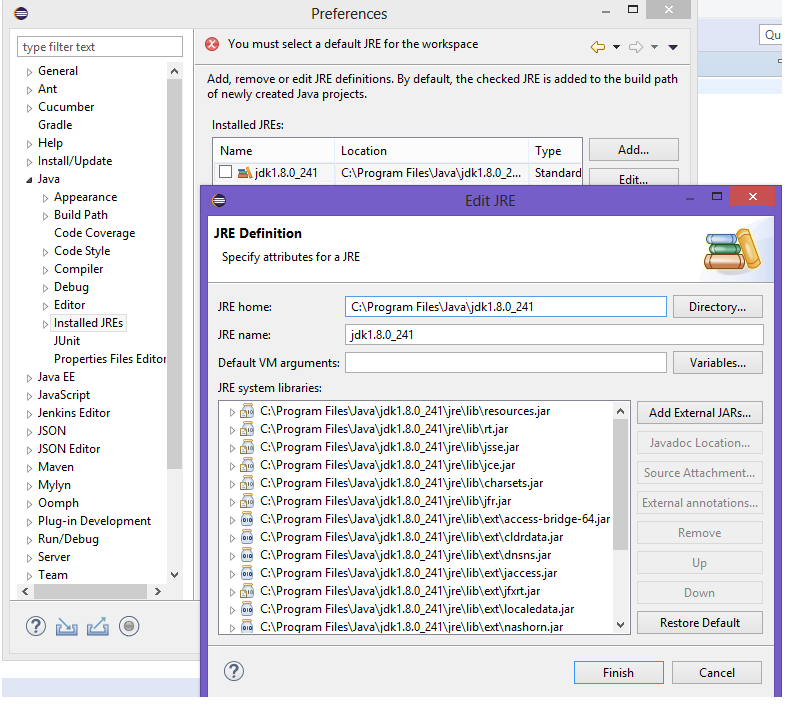

Please comment below if you like the book

Author Bio
This book is written by Biswajit Sundara. Biswajit is a software professional with 10+ years of experience. He has worked on various technologies and also an avid blogger on technology.
Last Edited: May 24th, 2020
Leave a Comment:


Maven Basics
Maven is a project management tool that uses POM (project object model) architecture. We can also say, Maven is a build tool that helps building, managing java based projects. Maven also helps to publish the projects as jar, war, metadata etc.
What is build/build tool?
In QA world we hear it often when is the QA build, Production build etc. So what does build mean? Let's take an example of a web application. We develop the source code run it in our local and it works fine. Now the application code should work in the server, and there we might not have all the dependent softwares, configurations etc what we have in our system so basically the build tool will download all the required dependencies, compile the source code into binary code, test the code and then package the binary code. During build deployment the package will be moved to the particular server and now the application is ready to be run independently.
Advantages of Maven
- Project Structure: Maven has clear project structure, it helps to organize the codes nicely. The src/main/java holds the application code and the src/test/java holds the unit test cases in case of Web Application project. For Automation project, many folks leave the src/main/java and writes everything under src/test/java. However I recommend keep the Framework related codes under src/main/java and then your application related codes like page classes, test modules, test cases under src/test/java So that in future if you share the project to another team, they just need to work on things those are under src/test/java
- Dependency Management: When we write codes, often we make references to external libraries, in order to use the functionalities we need to download the jar files and then provide the jar file link in the build path of the project. Manually adding the jar file is a tedious process, if there's a new version of something we have been using then we will have to manually delete the old jar file, download and attach the new jar file. Also when we share the project to another person, then he/she needs to download the files again and then set the build path. Maven handles this beautifully. In the pom.xml we just need to mention the dependency names, As soon as we save, all the dependecies are downloaded and attached to the project.
Popular Build Tools
- Maven -- supports Java and used for dependency management and automated software build
- Graddle -- supports Java, Groovy, Scala language. It introduces a Groovy-based domain-specific language instead of the XML form.
- MSBuild -- supports C#. Developped by Microsoft
- ANT -- supports Java language, uses XML file format, Old build tool, now rarely used.
Maven Central Repository
From this remote repository, maven downloads all the required Jar files and saves in the local .m2 folder.Refer: https://repo.maven.apache.org/maven2/
Maven Installation
First check if Maven is already installed. Type the below command in windows command prompt and see what does it return? if Maven is already installed then it will show the details else give the error message 'command is not recognized'mvn -version
Download Maven
- Go to url https://maven.apache.org/download.cgi
- Under Files check the row Binary zip archive
- Click on the hyperlink - apache-maven-3.6.3-bin.zip
Setup Maven
- Extract the zip file downloaded above
- copy the path upto bin folder e.g C:\apache-maven-3.6.3\bin
- Now go to environment variable, edit the system variable Path
- Append the copied folder path into the path variable text.
- Open command prompt and execute the command mvn -version
- Now it should return details about maven version
Setup Maven in Eclipse
- To make use of the maven software we also need to setup maven in the IDE that we use
- Eclipse has Maven in built now a days. So we don't have to configure anything additional
- To ensure maven is installed, go to Window -> Preference -> Maven should be at the left column
- Go to File -> New -> Other -> Maven -> Maven Project (should be able to create the project)
- Right click on the created maven project -> Run as -> should see the options m2 maven build, maven install, maven test etc
Create maven project using command line
Just run the below command in windows command prompt, it will create the maven project.
mvn -B archetype:generate
-DarchetypeGroupId=org.apache.maven.archetypes
-DgroupId=com.mycompany.app
-DartifactId=my-app
POM.xml File
Pom.xml is the back bone of the maven project. It contains all the informations related to the project. Please note there can be only one pom.xml file in maven project.
| Project | This is the root node in the pom.xml file. It specifies from where the maven project schema is downloaded. |
| ModelVersion | The maven POM version name |
| GroupID | This is used to uniquely identify organization projects. The combination of domain of your company, your company name, and the type of project should be used as group Id. So if you host your project in the maven central repository then It will navigate through the hierarchy and download the published files. Let's say mine is a commercial company and the name is bisApps and the type of project is 'framework' then the group id will become com.bisApps.framework |
| ArtifactId | Artifact Id is the project name. Group Id & artifact Id together forms an unique key that separates it from all other projects. Continuing our example let's say my framework project name is 'selenium-automation' |
| Packaging | Packaging indicates how would we like to publish the project. For web projects WAR and for Java projects JAR packaging is used |
| Version | This element indicates the version of the artifact generated by the project. It helps in version controlling of the project |
| Name | The display name of the project. When we create a maven project in eclipse, this is auto populated and same as Artifact Id |
| Url | Where the project can be found |
Add Compiler to Maven Projects
This is a pre requisite that we need to complete. We will have to specify where is the Java compiler, means we need to set the JDK for maven project. If we don't complete this step and try to build our project -> Then it will end up with the below errorNo compiler is provided in this environment. Perhaps you are running on a JRE rather than a JDK?
Environment Variable JAVA_HOME
Maven relies on the JAVA_HOME environment variable to use the right compiler. JAVA_HOME must refer to a JDK (JAVA Development Kit) and not a JRE (Java Runtime Environment).- Go to Environment variables -> Create a new variable under System Variable
- Variable name JAVA_HOME
- Variable Path C:\Program Files\Java\jdk1.8.0_241
- Open command prompt and type the command mvn -version
- Then it should display the Java details also
C:\Users\Biswajit>mvn -version Apache Maven 3.6.3 (cecedd343002696d0abb50b32b541b8a6ba2883f) Maven home: C:\apache-maven-3.6.3-bin\apache-maven-3.6.3\bin\.. Java version: 1.8.0_241, vendor: Oracle Corporation, runtime: C:\Program Files\Java\jdk1.8.0_241\jre
Running Maven in Eclipse
If we are running maven in Eclipse, then we need to add JDK to eclipse so that it can run maven without any issues.- Open Eclipse -> click on Windows -> Preferences -> Java -> Installed JREs
- If JDK is selected then that's fine, else if JRE is showing.
- Select the JRE row (don't tick) -> Click on 'Edit' button
- Set the JRE home, JRE name as JDK path and JDK name respectively. 
- Finish -> Apply & Close.
Build Life Cycle
We know that Maven is a build tool, so the next question is how to build? what are the steps we need to perform. Build life cycle is nothing but a series of phases/command execution to build the project.
Clean
This step needs to be done before any build life cycle. When we execute the command mvn clean it will delete the target directory that holds the result files from previous build.C:\Users\Biswajit\Desktop\demo>mvn clean [INFO] Scanning for projects... [INFO] [INFO] -----------------< GoogleSearchTest:GoogleSearchTest >------------------ [INFO] Building GoogleSearchTest 0.0.1-SNAPSHOT [INFO] --------------------------------[ jar ]--------------------------------- [INFO] [INFO] --- maven-clean-plugin:2.5:clean (default-clean) @ GoogleSearchTest --- [INFO] Deleting C:\Users\Biswajit\Desktop\demo\target [INFO] ------------------------------------------------------------------------ [INFO] BUILD SUCCESS [INFO] ------------------------------------------------------------------------ [INFO] Total time: 1.555 s [INFO] Finished at: 2020-06-07T20:33:23+05:30 [INFO] ------------------------------------------------------------------------
1. Validate
Validate the project is correct and all necessary information is available. Open the pom.xml. There shouldn't be anything wrong. If you see any red icon, we need to fix. For example, if you are using selenium 3.15.0 and that version is not available in maven repository it will show red icons and it is a validation error. We can right click on the project -> Run as -> Maven Build -> Set the goal as "validate" -> Run. However I always prefer executing the commands in command prompt.C:\Users\Biswajit\Desktop\demo>mvn validate [INFO] Scanning for projects... [INFO] [INFO] -----------------< GoogleSearchTest:GoogleSearchTest >------------------ [INFO] Building GoogleSearchTest 0.0.1-SNAPSHOT [INFO] --------------------------------[ jar ]--------------------------------- [INFO] ------------------------------------------------------------------------ [INFO] BUILD SUCCESS [INFO] ------------------------------------------------------------------------ [INFO] Total time: 0.143 s [INFO] Finished at: 2020-06-07T20:37:07+05:30 [INFO] ------------------------------------------------------------------------
2. Compile
Compile the source code and create class files out of java files. If there are any syntax errors then it will throw compilation errors else the build will be successfull. Eclipse offers a way to review the errors. If you see a red icon on your project then it has problems. Go to window -> show views -> ProblemsC:\Users\Biswajit\Desktop\demo>mvn compile [INFO] Scanning for projects... [INFO] [INFO] -----------------< GoogleSearchTest:GoogleSearchTest >------------------ [INFO] Building GoogleSearchTest 0.0.1-SNAPSHOT [INFO] --------------------------------[ jar ]--------------------------------- [INFO] [INFO] --- maven-resources-plugin:2.6:resources (default-resources) @ GoogleSearchTest --- [INFO] Using 'UTF-8' encoding to copy filtered resources. [INFO] skip non existing resourceDirectory C:\Users\Biswajit\Desktop\demo\src\main\resources [INFO] [INFO] --- maven-compiler-plugin:3.5.1:compile (default-compile) @ GoogleSearchTest --- [INFO] Changes detected - recompiling the module! [INFO] Compiling 1 source file to C:\Users\Biswajit\Desktop\demo\target\classes [INFO] ------------------------------------------------------------------------ [INFO] BUILD SUCCESS [INFO] ------------------------------------------------------------------------ [INFO] Total time: 4.886 s [INFO] Finished at: 2020-06-07T20:41:57+05:30 [INFO] ------------------------------------------------------------------------
3. Test
Test the compiled source code using any unit testing framework like Junit/TestNG etc. It will scan the project and pick the methods annoted with @Test and start executing them one by one.C:\Users\Biswajit\Desktop\demo>mvn test [INFO] Scanning for projects... [INFO] [INFO] -----------------< GoogleSearchTest:GoogleSearchTest >------------------ [INFO] Building GoogleSearchTest 0.0.1-SNAPSHOT [INFO] --------------------------------[ jar ]--------------------------------- [INFO] [INFO] --- maven-resources-plugin:2.6:resources (default-resources) @ GoogleSearchTest --- [INFO] Using 'UTF-8' encoding to copy filtered resources. [INFO] skip non existing resourceDirectory C:\Users\Biswajit\Desktop\demo\src\main\resources [INFO] [INFO] --- maven-compiler-plugin:3.5.1:compile (default-compile) @ GoogleSearchTest --- [INFO] Changes detected - recompiling the module! [INFO] Compiling 1 source file to C:\Users\Biswajit\Desktop\demo\target\classes [INFO] [INFO] --- maven-resources-plugin:2.6:testResources (default-testResources) @ GoogleSearchTest --- [INFO] Using 'UTF-8' encoding to copy filtered resources. [INFO] skip non existing resourceDirectory C:\Users\Biswajit\Desktop\demo\src\test\resources [INFO] [INFO] --- maven-compiler-plugin:3.5.1:testCompile (default-testCompile) @ GoogleSearchTest --- [INFO] Changes detected - recompiling the module! [INFO] Compiling 1 source file to C:\Users\Biswajit\Desktop\demo\target\test-classes [INFO] [INFO] --- maven-surefire-plugin:2.19.1:test (default-test) @ GoogleSearchTest - ------------------------------------------------------- T E S T S ------------------------------------------------------- Running TestSuite ChromeDriver was started successfully. Jun 07, 2020 8:59:00 PM org.openqa.selenium.remote.ProtocolHandshake createSession INFO: Detected dialect: W3C Title verification Passed Tests run: 1, Failures: 0, Errors: 0, Skipped: 0, Time elapsed: 47.446 sec - in TestSuite Results : Tests run: 1, Failures: 0, Errors: 0, Skipped: 0 [INFO] ------------------------------------------------------------------------ [INFO] BUILD SUCCESS [INFO] ------------------------------------------------------------------------ [INFO] Total time: 01:01 min [INFO] Finished at: 2020-06-07T20:59:42+05:30 [INFO] ------------------------------------------------------------------------
4. Package
The compiled code will be packaged in the distributable format like JAR/WAR.C:\Users\Biswajit\Desktop\demo>mvn package [INFO] Scanning for projects... [INFO] [INFO] -----------------< GoogleSearchTest:GoogleSearchTest >------------------ [INFO] Building GoogleSearchTest 0.0.1-SNAPSHOT [INFO] --------------------------------[ jar ]--------------------------------- [INFO] [INFO] --- maven-resources-plugin:2.6:resources (default-resources) @ GoogleSearchTest --- [INFO] Using 'UTF-8' encoding to copy filtered resources. [INFO] skip non existing resourceDirectory C:\Users\Biswajit\Desktop\demo\src\main\resources [INFO] [INFO] --- maven-compiler-plugin:3.5.1:compile (default-compile) @ GoogleSearchTest --- [INFO] Nothing to compile - all classes are up to date [INFO] [INFO] --- maven-resources-plugin:2.6:testResources (default-testResources) @ GoogleSearchTest --- [INFO] Using 'UTF-8' encoding to copy filtered resources. [INFO] skip non existing resourceDirectory C:\Users\Biswajit\Desktop\demo\src\test\resources [INFO] [INFO] --- maven-compiler-plugin:3.5.1:testCompile (default-testCompile) @ GoogleSearchTest --- [INFO] Nothing to compile - all classes are up to date [INFO] [INFO] --- maven-surefire-plugin:2.19.1:test (default-test) @ GoogleSearchTest - -- ------------------------------------------------------- T E S T S ------------------------------------------------------- Running TestSuite ChromeDriver was started successfully. Jun 07, 2020 9:15:33 PM org.openqa.selenium.remote.ProtocolHandshake createSession INFO: Detected dialect: W3C Title verification Passed Tests run: 1, Failures: 0, Errors: 0, Skipped: 0, Time elapsed: 18.686 sec - in TestSuite Results : Tests run: 1, Failures: 0, Errors: 0, Skipped: 0 [INFO] [INFO] --- maven-jar-plugin:2.4:jar (default-jar) @ GoogleSearchTest --- [INFO] Building jar: C:\Users\Biswajit\Desktop\demo\target\GoogleSearchTest-0.0.1-SNAPSHOT.jar [INFO] ------------------------------------------------------------------------ [INFO] BUILD SUCCESS [INFO] ------------------------------------------------------------------------ [INFO] Total time: 22.415 s [INFO] Finished at: 2020-06-07T21:15:49+05:30 [INFO] ------------------------------------------------------------------------We can see the jar file is created under the target folder. C:\Users\Biswajit\Desktop\demo\target\GoogleSearchTest-0.0.1-SNAPSHOT.jar
5. Verify
This will execute the integration tests from the project. The mvn test is meant to execute the unit tests and mvn verify is meant to execute the integration tests. We will have to configure in pom.xml file using fail safe pluginRef -https://www.petrikainulainen.net/programming/maven/integration-testing-with-maven/